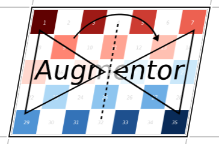
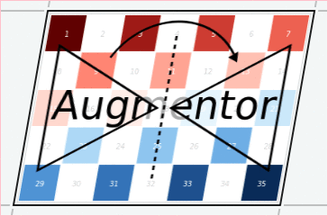

ShearX: Shear horizontally
Augmentor.ShearX — Type.ShearX <: Augmentor.AffineOperationDescription
Shear the image horizontally for the given degree. This operation can only be performed as an affine transformation and will in general cause other operations of the pipeline to use their affine formulation as well (if they have one).
It will always perform the transformation around the center of the image. This can be particularly useful when combining the operation with CropNative.
Usage
ShearX(degree)Arguments
degree:RealorAbstractVectorofRealthat denote the shearing angle(s) in degree. If a vector is provided, then a random element will be sampled each time the operation is applied.
See also
Examples
using Augmentor
img = testpattern()
# shear horizontally exactly 5 degree
augment(img, ShearX(5))
# shear horizontally between 10 and 20 degree to the right
augment(img, ShearX(10:20))
# shear horizontally one of the five specified degrees
augment(img, ShearX([-10, -5, 0, 5, 10]))It will always perform the transformation around the center of the image. This can be particularly useful when combining the operation with CropNative.
| Input | Output for ShearX(10) |
|---|---|
 |  |
It is also possible to pass some abstract vector to the constructor, in which case Augmentor will randomly sample one of its elements every time the operation is applied.
| Input | Samples for ShearX(-10:10) |
|---|---|
|  |